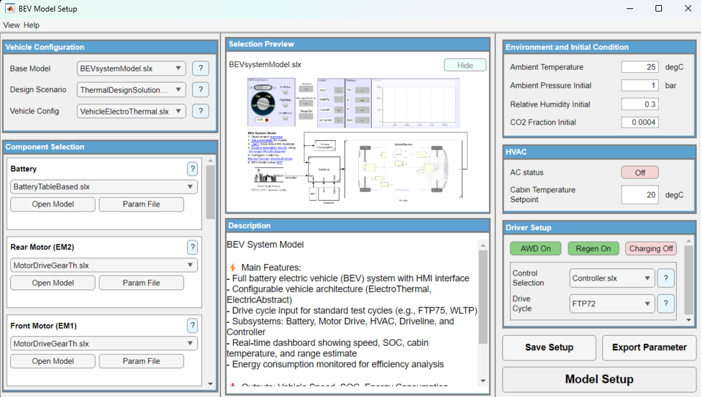
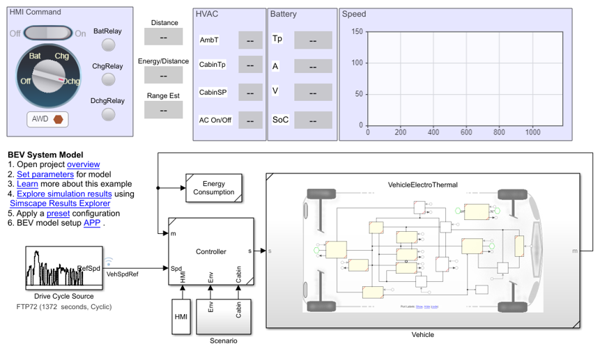
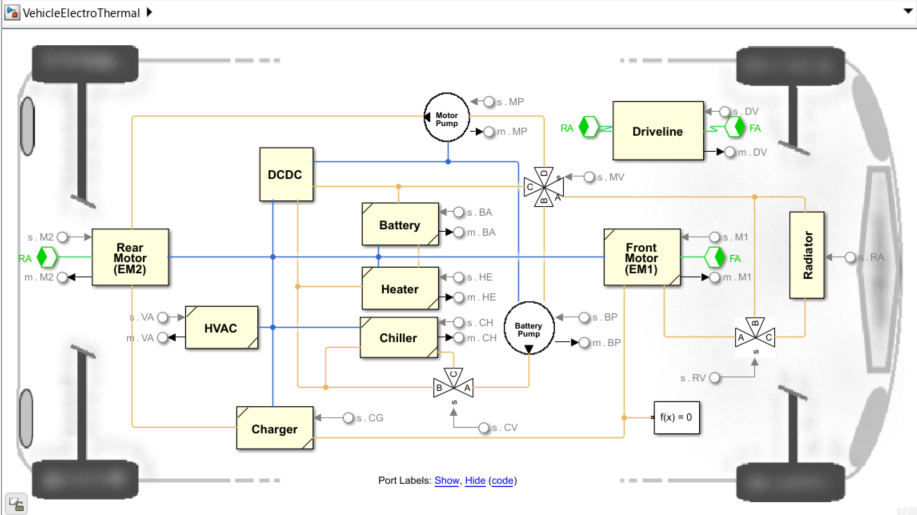
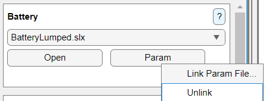
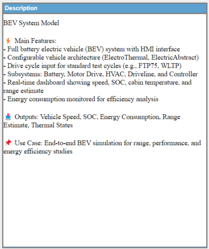
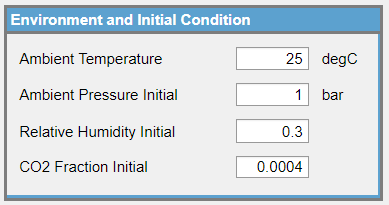
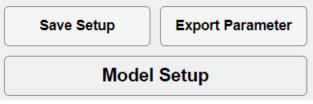

Configure a BEV Model Using the BEV App
This workflow shows how to configure a battery electric vehicle model using the BEV App. You will select a vehicle platform, choose component models and controls, set environment and HVAC options, configure the driver and drive cycle, save your setup, and create a Simulink model with parameter scripts.
Overview
The BEV App walks you through building a battery electric vehicle model step by step. Instead of wiring models and editing scripts by hand, you pick your vehicle setup, choose components from dropdowns, set weather and cabin conditions, and the app builds the model and scripts for you.

Prerequisites
Before starting, open the project by running the project file.
openProject("ElectricVehicleSimscape.prj")Opening the project sets up your MATLAB path so the app can find all models, components, and configuration files it needs.
Then launch the BEV App from the MATLAB command window:
BEVappThe app window opens with the Vehicle Configuration panel on the left. From here, select a base model and design scenario, then work through the panels top to bottom.
First-use path
Open project →
Launch app (BEVapp) →
Select base model & design scenario →
Choose components →
Set environment & driver →
Model Setup
Follow this sequence your first time through. Each section below explains one step in detail.
Vehicle Configuration
After launching the app, use this panel to select your vehicle platform. The three dropdowns here control which components and options become available in the rest of the app.

The following list describes what each dropdown does.
- Base Model — pick the Simulink model file that contains your BEV layout.
- Design Scenario — pick a preset configuration that controls which components and fidelities are available. Setups you have saved yourself appear below a separator line.
- Vehicle Config — pick the vehicle template that sets the overall model structure (e.g. electric-only, electro-thermal, with HVAC).


Component Selection
Each row in this panel represents one component in the vehicle (battery, motor, pump, etc.). Use the dropdown in each row to choose which fidelity you want for that component.

The row label shows the component name (e.g. "Battery", "Rear Motor (EM2)"). The dropdown next to it lists the available fidelities for that component. Only models that are present in the project folder appear in the list.
How the dropdown gets populated
- The app looks through the project's component folders for available model files.
- It only shows models that are allowed by the Design Scenario you selected.
- If a model file is missing from the project, it is marked with a red note.
Controls in each component row
| Control | Description |
|---|---|
| Label | The name of the component (e.g. "Battery", "Front Motor (EM1)"). |
| Dropdown | Pick which fidelity to use for this component. |
| Open Model | Open the selected model in Simulink so you can inspect it. |
| Param File | Open the parameter file for this component. Right-click to link or unlink a different parameter file. |
| ? | Show a preview image and description of the selected model. |
Link parameter files
Each component can have a parameter file that defines its values (sizes, ratings, etc.).
By default, the app looks for a file named <ModelName>Params.m in the component's Model folder.
If you want to use a different file, right-click the Param File button to link or unlink it.

Selection Preview and Description
After picking a component from the dropdown, check the preview and description to make sure it is the right one. Both panels update automatically whenever you change a selection.
Preview panel
- Shows a snapshot of the selected model canvas.
- Updates when you change a dropdown selection.
- Helps you spot problems (missing connections, wrong component) before creating the model.

Description panel
- Explains what the selected model does.
- Lists its main inputs, outputs, and any important assumptions.
- Helps you decide between fidelities when more than one is available.

Environment and Initial Condition
Set the weather and starting conditions for your simulation. These values are used by any component that depends on temperature, pressure, or humidity.
| Parameter | Description | Default |
|---|---|---|
| Ambient Temperature | Outside air temperature | 25 degC |
| Ambient Pressure Initial | Starting air pressure (lower at high altitude) | 1 bar |
| Relative Humidity Initial | Starting humidity of the outside air (0 = dry, 1 = fully humid) | 0.3 |
| CO2 Fraction Initial | CO2 level in outside air (typical outdoor value is 0.0004) | 0.0004 |

HVAC
Turn the cabin air conditioning on or off and set the target cabin temperature. This panel is only active when your vehicle configuration includes an HVAC component.
| Control | Description | Default |
|---|---|---|
| AC status | Toggle air conditioning on or off | Off |
| Cabin Temperature Setpoint | Target cabin air temperature | 20 degC |
Turning AC on draws more power from the battery, which reduces driving range. To see the difference, run once with AC off, then again with AC on and compare the results.

Driver Setup
Choose how the vehicle is driven: which wheels are powered, whether braking recovers energy, which controller runs the logic, and which drive cycle sets the target speed.

Drive mode buttons
| Button | Description |
|---|---|
| AWD On | Toggle all-wheel drive. When on, both front and rear motors are active. |
| Regen On | Toggle regenerative braking. When on, braking feeds energy back to the battery. |
| Charging Off | Toggle charging mode. When on, disables AWD and Regen. |
Control Selection
Pick the controller that matches your vehicle configuration. Different controllers handle different features (e.g. basic powertrain control vs. HVAC-aware control).
| Element | Description |
|---|---|
| Control Selection | Pick a controller from the available options. |
| ? | Show a description and preview of the selected controller. |
Drive Cycle
Pick the speed pattern the driver will follow during simulation (e.g. city driving, highway, or a standard test cycle).
- Common cycles:
FTP72,WLTP,NEDC,US06. - If no options appear, install the Simulink Support Package for Vehicle Drive Cycles.
- The ? button shows the description and preview of the selected drive cycle.
Save Setup, Export Parameter, and Model Setup
Once you are happy with your selections, use these buttons to save your work, generate parameter files, or build the final model.

Save Setup
Save everything you have selected (components, environment, HVAC, driver settings) so you can reload it later.
- Your setup is saved as a file in
APP/Config/User/. - Saved setups appear in the Design Scenario dropdown so you can load them back in one click.
- Loading a saved setup restores all your selections and settings exactly as they were.
Export Parameter
Create a MATLAB script that sets up all the parameter values your model needs to run.
- Generates a script that loads parameters for every component you selected.
- Pulls in the parameter files you linked in the Components panel.
- Includes environment, HVAC, and driver values if your configuration uses them.
Missing parameter link panel
If any component does not have a parameter file linked yet, the app will ask you to link one when you press Export Parameter.
- Browse to a parameter file and link it.
- Or skip it to use default values for that component.
This works the same way as right-clicking the Param File button in the Component Selection panel.
Model Setup
Build the Simulink model based on everything you configured in the app.
- Opens the base model you selected.
- Swaps in the component models you chose for each slot (battery, motor, pump, etc.).
- Applies your environment, HVAC, driver, controller, and drive cycle settings.
- The model is then ready to simulate.
Typical beginner path
Configure your vehicle in the app, then press Model Setup to build the model and simulate. The other two buttons are useful but optional support actions:
- Save Setup — saves your selections so you can reload and iterate later without re-picking everything.
- Export Parameter — generates a standalone parameter script you can run outside the app or commit to version control.
To apply your selections and build the model, click Model Setup.